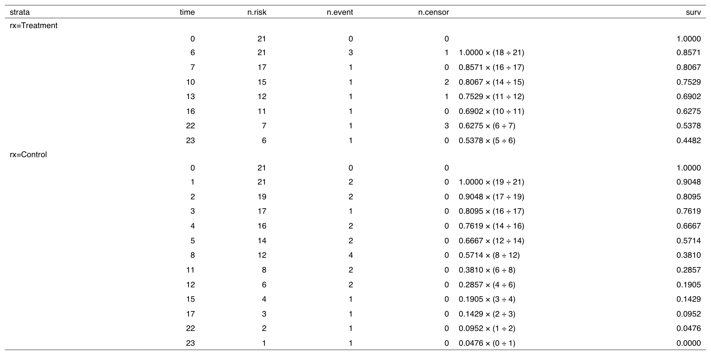

Kaplan-Meier(KM) 생존곡선
library (autoReg)library (survival)library (survminer)library (howto)library (flextable)library (ftExtra)library (tidyverse)= subset (anderson,rx== 0 ) ## 입력할 때 등호가 두 개("==")인 것을 주의
time status sex logWBC rx
1 35 0 1 1.45 0
2 34 0 1 1.47 0
3 32 0 1 2.20 0
4 32 0 1 2.53 0
5 25 0 1 1.78 0
6 23 1 1 2.57 0
7 22 1 1 2.32 0
8 20 0 1 2.01 0
9 19 0 0 2.05 0
10 17 0 0 2.16 0
11 16 1 1 3.60 0
12 13 1 0 2.88 0
13 11 0 0 2.60 0
14 10 0 0 2.70 0
15 10 1 0 2.96 0
16 9 0 0 2.80 0
17 7 1 0 4.43 0
18 6 0 0 3.20 0
19 6 1 0 2.31 0
20 6 1 1 4.06 0
21 6 1 0 3.28 0
중도절단자료 표시
[1] 35 34 32 32 25 23 22 20 19 17 16 13 11 10 10 9 7 6 6 6 6
with (data,Surv (time,status))
[1] 35+ 34+ 32+ 32+ 25+ 23 22 20+ 19+ 17+ 16 13 11+ 10+ 10 9+ 7 6+ 6
[20] 6 6
평균생존시간(\(\bar{T}\) )
평균생존시간(\(\bar{T}\) )은 중도절단을 고려하지 않고 생존시간의 평균을 계산한다.
중도절단된 자료는 정확한 생존시간을 알 수 없으므로 실제 생존시간은 평균생존기간보다 길다.
평균위험률(average hazard rate, \(\bar{h}\) )은 전체 실패 수를 생존시간의 합계로 나눈 값이다.
%>% group_by (rx) %>% summarize (T= mean (time), h= sum (status)/ sum (time))
# A tibble: 2 × 3
rx T h
<dbl> <dbl> <dbl>
1 0 17.1 0.0251
2 1 8.67 0.115
각 시기별 생존률
Call: survfit(formula = Surv(time, status) ~ 1, data = data)
time n.risk n.event survival std.err lower 95% CI upper 95% CI
6 21 3 0.857 0.0764 0.720 1.000
7 17 1 0.807 0.0869 0.653 0.996
10 15 1 0.753 0.0963 0.586 0.968
13 12 1 0.690 0.1068 0.510 0.935
16 11 1 0.627 0.1141 0.439 0.896
22 7 1 0.538 0.1282 0.337 0.858
23 6 1 0.448 0.1346 0.249 0.807
생존률의 95% 신뢰구간
\[\hat{S}(t) \pm 1.96 \times \sqrt{\hat{Var}(\hat{S}(t))}\] 으로 계산하며 생존률의 추정 분산 \(\hat{Var}(\hat{S}(t))\) 는 Greenwood 식(Greenwood’s formula)을 사용하여 계산한 것이다.
\[\hat{Var}(\hat{S}(t)=(\hat{S}(t))^2\times\sum_{f:t_{(f)}\leq t}[\frac{m_f}{n_f(n_f-m_f)}]\]
생존률의 계산
howto (fit) %>% highlight (i= 1 ,j= 6 ,color= "yellow" ) %>% highlight (i= 2 ,j= c (2 ,3 ,5 ),color= "yellow" )
6주째 생존률 \(\hat{S}(6)\) 추정
6주째에 3명에서 event가 발생
6주 째의 n.risk는 21명
이 중 event가 발생한 3명을 제외하고 18명이 생존
따라서 6주째 생존률은 다음과 같다. \(\hat{S}(6)\) 은 \(S(6)\) 의 추정량이라는 뜻이다.
\[\hat{S}(6)=1 \times \frac{(21-3)}{21} = 1\times\frac{18}{21}=0.8571\]
7주째 생존률 \(\hat{S}(7)\) 추정
7주 째의 number at risk는 6주째에 3명 실패(event 발생), 1명 중도절단되어 17명이고 생존률은 \(0.8571 \times (16 \div 17)=0.8067\) 이 된다. 이 값은 다음과 같다.
\[\hat{S}(7)=1\times \frac{18}{21} \times \frac{16}{17}=0.8067\]
13주째 생존률은 다음과 같이 계산된다.
\[\hat{S}(13)=1\times \frac{18}{21} \times \frac{16}{17}\times\frac{14}{15}\times \frac{11}{12}=0.6902\]
ggsurvplot
survminer 패키지의 ggsurvplot()을 이용하면 보다 보기좋은 그래프를 얻을 수 있다.
library (survminer)ggsurvplot (fit,data= data)
생존률과 조건부확률
6주째에 3명에서 event가 발생하였다. 따라서 생존률은 \(1.0 \times (21-3) \div 21 = 18\div21=0.8571\) 이 된다. 이를 달리 표현하면 6주까지 살아있는 사람 중 6주를 초과하여 살아있는 비율이다.
\[\hat{S}(6)= P(T>6 | T\geq 6) = \frac{18}{21} \]
조건부확률
A라는 사건이 일어날 확률을 \(P(A)\) , B라는 사건이 일어날 확률을 \(P(B)\) 라고 하면 사건 B가 일어났다는 가정하에 사건 A가 일어날 조건부확률을 \(P(A|B)\) 로 표기한다. 이 조건부확률은 다음과 같다.
\[P(A|B)=\frac{P(A\cap B)}{P(B)}\]
A와 B가 동시에 일어날 확률 \(P(A\cap B)\) 는 다음과 같다.
\[P(A \cap B)=P(A|B)\times P(B)= P(B|A)\times P(A)\]
따라서 조건부확률 \(P(A|B)\) 를 다음과 같이 쓸 수 있다..
\[P(A|B)=\frac{P(A\cap B)}{P(B)}=\frac{P(A) \times P(B|A)}{P(B)}\]
위에서 \(\hat{S}(6)= P(T>6 | T\geq 6)\) 는 조건부 확률로 \(T>6\) 인 경우 항상 \(T \geq 6\) 이므로 다음과 같이 쓸 수 있다.
\[\begin{align*}
P(T>6\ |\ T\geq 6)&=\frac{P(T >6)\times P(T \geq6\ |\ T> 6)}{P(T\geq 6)}\\
&=\frac{P(T>6)}{P(T \geq6)}=\frac{18}{21}
\end{align*}\]
K-M 생존율의 일반화
위에서 살펴본 K-M 생존률을 일반화하면 다음과 같다. f번째 시간 \(t_f\) 의 생존률은 그 시간 전까지의 추정생존율에 조건부확률인 \(P(T > t_{(f)}\ |\ P \geq t_{(f)})\) 을 곱한 값이 된다.
\[\hat{S}(t_{(f)})=\hat{S}(t_{(f-1))}\times\hat{P}(T>t_{(f)}\ |\ T \geq t_{(f)})\] K-M 생존률을 구하는 승법극한추정량(product limit estimator)은 다음과 같다.
\[\hat{S}(t_{(f)})=\prod_{i=1}^{f}\hat{P}(T>t_{(f)}\ |\ T \geq t_{(f)})\]
연습문제
anderson1 데이터를 이용해 생존곡선을 구하고 있다. 앞절에서는 설명의 편의상 치료군만을 대상으로 생존률을 구하였으나 치료군, 대조군 모두에서 생존률을 구하고자 한다. 다음 표에서 빈칸을 채우시오.
= survfit (Surv (time,status)~ rx,data= anderson1)howto (fit) %>% plot ()

로그순위검정
두 군간의 KM 생존곡선비교
세 군 이상인 경우 로그순위검정
로그순위검정의 대안
층화된 로그순위검정
로그순위검정
두 개의 생존곡선이 통계적으로 동등한지 검정
두 개의 생존곡선을 전체적으로 볼 때 true survival curve가 다르다는 근거가 없다는 뜻이다.
두 개의 생존곡선을 전체적을 비교하기 위해 각각의 시간에서 두 군의 기대값과 관찰값의 차이를 구하여 검정통계량을 계산하는 카이제곱 검정의 일종
= survfit (Surv (time,status)~ rx,data= anderson1)summary (fit1)
Call: survfit(formula = Surv(time, status) ~ rx, data = anderson1)
rx=Treatment
time n.risk n.event survival std.err lower 95% CI upper 95% CI
6 21 3 0.857 0.0764 0.720 1.000
7 17 1 0.807 0.0869 0.653 0.996
10 15 1 0.753 0.0963 0.586 0.968
13 12 1 0.690 0.1068 0.510 0.935
16 11 1 0.627 0.1141 0.439 0.896
22 7 1 0.538 0.1282 0.337 0.858
23 6 1 0.448 0.1346 0.249 0.807
rx=Control
time n.risk n.event survival std.err lower 95% CI upper 95% CI
1 21 2 0.9048 0.0641 0.78754 1.000
2 19 2 0.8095 0.0857 0.65785 0.996
3 17 1 0.7619 0.0929 0.59988 0.968
4 16 2 0.6667 0.1029 0.49268 0.902
5 14 2 0.5714 0.1080 0.39455 0.828
8 12 4 0.3810 0.1060 0.22085 0.657
11 8 2 0.2857 0.0986 0.14529 0.562
12 6 2 0.1905 0.0857 0.07887 0.460
15 4 1 0.1429 0.0764 0.05011 0.407
17 3 1 0.0952 0.0641 0.02549 0.356
22 2 1 0.0476 0.0465 0.00703 0.322
23 1 1 0.0000 NaN NA NA
ggsurvplot (fit1,data= anderson1,pval= TRUE )
로그순위검정
survdiff (Surv (time,status)~ rx,data= anderson1)
Call:
survdiff(formula = Surv(time, status) ~ rx, data = anderson1)
N Observed Expected (O-E)^2/E (O-E)^2/V
rx=Treatment 21 9 19.3 5.46 16.8
rx=Control 21 21 10.7 9.77 16.8
Chisq= 16.8 on 1 degrees of freedom, p= 4e-05
= howto2 (fit1)%>% highlight (i= 2 ,j= c (2 : 7 )) %>% plot ()
2주째에 n.risk는 대조군과 실험군에서 각각 19,21명이며 실패는 대조군에서 2, 치료군에서 0이 관찰되었다.
실패의 기대값은 대조군은 \((n1/(n1+n2))\times(n1+n2)\) 이며 치료군은 \((n2/(n1+n2))\times(n1+n2)\) 이다.
관찰값-기댓값의 추정분산은 다음 공식으로 계산한다.
\[Var(O_i-E_i)=\frac{n1n2(f1+f2)(n1+n2-f1-f2)}{(n1+n2)^2(n1-n2-1)}\]
로그순위 검정량
\[\begin{align*}
Log-rank\ statistic &= \frac{(O_2-E_2)^2}{Var(O_2-E_2)}\\
& =\frac{(-10.25)^2}{6.26}\approx16.79\\
\end{align*}\]
pchisq (attr (ft,"x2" ),df= 1 ,lower.tail= FALSE )
세 군 이상인 경우 로그순위검정
세 군 이상인 경우의 로그순위 검정도 survdiff()함수를 통해 시행할 수 있다.
로그순위 검정의 귀무가설(Null hypothesis: \(H_0\) )은 “모든 생존곡선이 동등하다” 이다.
세 군 이상의 로그 순위검정을 위하여는 각 군의 관찰값과 기대값의 합의 분산과 공분산을 포함하는 복잡한 수식이 사용되지만 수작업으로 계산하지는 않는다.
예제: survival 패키지의 대장암데이터
stage B/C의 대장암 환자의 데이터
관찰군(Obs(ervation))과 Lev(amisole), Lev(amisole)+5-FU 세 군의 생존을 비교한다.
data (cancer,package= "survival" )survdiff (Surv (time,status)~ rx,data= colon)
Call:
survdiff(formula = Surv(time, status) ~ rx, data = colon)
N Observed Expected (O-E)^2/E (O-E)^2/V
rx=Obs 630 345 299 7.01 10.40
rx=Lev 620 333 295 4.93 7.26
rx=Lev+5FU 608 242 326 21.61 33.54
Chisq= 33.6 on 2 degrees of freedom, p= 5e-08
통계량 계산
다음의 근사식이 사용되는데 이 통계량은 군의 갯수-1의 자유도를 갖는 카이제곱 분포를 따른다.
\[\chi^2 \approx \sum_{i=1}^{n} \frac{(O_i-E_i)^2}{E_i}\]
= survfit (Surv (time,status)~ rx,data= colon)ggsurvplot (fit2,data= colon,pval= TRUE )
로그순위검정의 대안
통계량을 구할때 가중치를 주어 계산한다.
Wilcoxon, Tarone-Ware, Peto, Flemington-Harrington 검정 등
가중치를 주는 방법에 따라 초기의 실패에 더 가중치를 주기도 한다.
\[Test\ statistic=\frac{(\sum_f w(t_f)(O_i-E_i))^2}{Var(\sum_f w(t_f)(O_i-E_i{}{}))}\]
위의 식에서 가중치 \(W(t_f)=weight\ at\ fth\ failure\ time\) 으로 여러 검정 방법들은 가중치에 따라 그 결과가 달라진다.
Log Lank
1
Wilcoxon
\(n_f\)
Tarone-Ware
sqrt(\(n_f\) )
Peto
\(\hat{s}(t_f)\)
Flemington-Harrington
\(\hat{S}(t_{(f-1)})^P\times [1 - \hat{S}(t_{(f-1)})]^q\)
예제: 췌장암 데이터
pfs: 병기의 진행이 없는 생존(progression free survival)
병기에 따른 생존곡선을 비교해본다.
data (pancreatic2,package= "asaur" )survdiff (Surv (pfs)~ stage,data= pancreatic2)
Call:
survdiff(formula = Surv(pfs) ~ stage, data = pancreatic2)
N Observed Expected (O-E)^2/E (O-E)^2/V
stage=LA 8 8 12.3 1.49 2.25
stage=M 33 33 28.7 0.64 2.25
Chisq= 2.2 on 1 degrees of freedom, p= 0.1
로그순위검정에서 국소진행암(LA, locally advanced)과 전이된암(M, metastatic)의 pfs 생존곡선이 동등하지 않다는 근거는 없다고 할 수 있다.
생존곡선
= survfit (Surv (pfs)~ stage,data= pancreatic2)ggsurvplot (fit4,data= pancreatic2,pval= TRUE )
Peto 수정에 의한 로그순위검정
survdiff (Surv (pfs)~ stage,data= pancreatic2,rho= 1 )
Call:
survdiff(formula = Surv(pfs) ~ stage, data = pancreatic2, rho = 1)
N Observed Expected (O-E)^2/E (O-E)^2/V
stage=LA 8 2.34 5.88 2.128 4.71
stage=M 33 18.76 15.22 0.822 4.71
Chisq= 4.7 on 1 degrees of freedom, p= 0.03
검정결과 p 값은 0.03으로 유의하다. 이 검정방법은 초기의 생존시간에 가중치를 주기 때문에 국소진행암이 초기에 생존에 유리한 것으로 나타난다.
생존곡선
ggsurvplot (fit4,data= pancreatic2,pval= TRUE ,log.rank.weights= "S1" )
로그순위검정 검정량 계산
로그순위검정을 위해 기대값을 계산하고자 한다. 다음 예에서 빈칸을 채우시오
= survfit (Surv (time,status)~ x,data= aml)howto2 (fit) %>% plot ()
층화된 로그순위검정
두 군간의 생존곡선을 비교할 때 다른 공변량을 보정해야 할 경우 층화된 비례위험모형을 사용할 수도 있고 보정할 공변량의 수준이 적을 때는 층화된 로그순위검정을 할 수도 있다.
치료한 병원, 나이군, 성별 등이 층화할 변수의 예이다.
층화된 로그순위검정의 귀무가설은 \(H_0: h_{0j}(t)=h_{1j(t)}\ for\ j=1,2,...,G\) 이다.
이때 두 번 째 변수의 각 수준에 대해 스코어통계량 \(U_{0g}\) 와 분산 \(V_{0g}\) 를 계산한다.(이 때의 \(g=1,...,G\) 는 첫 번째 변수의 group이다). -
검정통계량은 \[\chi^2=\frac{(\sum_{g=1}^G U_{0g})^2}{\sum_{g=1}^G V_{0g}^2}\] 이며 이 통계량은 자유도가 1인 카이제곱분포를 따른다.
예제
asaur 패키지의 pharmacoSmoking은 금연에 관한 치료로 패치만을 사용한 군과 복합약물치료를 한 군 간의 재발(다시 흡연)까지의 시간에 관한 데이터이다. 두 군간의 생존을 비교하면 다음과 같다.
data (pharmacoSmoking,package= "asaur" )survdiff (Surv (ttr,relapse)~ grp,data= pharmacoSmoking)
Call:
survdiff(formula = Surv(ttr, relapse) ~ grp, data = pharmacoSmoking)
N Observed Expected (O-E)^2/E (O-E)^2/V
grp=combination 61 37 49.9 3.36 8.03
grp=patchOnly 64 52 39.1 4.29 8.03
Chisq= 8 on 1 degrees of freedom, p= 0.005
= survfit (Surv (ttr,relapse)~ grp,data= pharmacoSmoking)ggsurvplot (fit,data= pharmacoSmoking,pval= TRUE ,legend= c (0.7 ,0.85 ))
층화된 로그순위검정
나이의 영향을 보정하기 위해 ageGroup2를 사용하여 층화된 로그순위검정을 하면 다음과 같다.
survdiff (Surv (ttr, relapse) ~ grp+ strata (ageGroup2),data= pharmacoSmoking)
Call:
survdiff(formula = Surv(ttr, relapse) ~ grp + strata(ageGroup2),
data = pharmacoSmoking)
N Observed Expected (O-E)^2/E (O-E)^2/V
grp=combination 61 37 49.1 2.99 7.03
grp=patchOnly 64 52 39.9 3.68 7.03
Chisq= 7 on 1 degrees of freedom, p= 0.008
= c ("Combination, age 21-49" ,"Combination, age 50+" ,"patchOnly, age 21-49" ,"patchOnly, age 50+" )ggsurvplot (survfit (Surv (ttr, relapse) ~ grp+ strata (ageGroup2),data= pharmacoSmoking),data= pharmacoSmoking,legend= c (0.7 ,0.85 ),legend.labs= labs,pval= TRUE )
혼동변수의 효과
“Applied Survival Analysis Using R” p51-52
대조군과 치료군을 비교하기 위한 임상연구를 시뮬레이션한 데이터를 만든다. - 생존시간은 지수적으로 분포한다고 가정하고 질환이 아주 치명적이어서 중도절단이 없는 것으로 가정한다.
혼동변수로 두 가지 genotype(유전자타입)인 wild type(정상)과 mutant type(돌연변이)을 가정하고 이 중 돌연변이인 경우 상당히 나쁜 예후를 보이는 것으로 가정한다.
구체적으로는 대조군의 mutant인 경우 매일 0.03의 위험비를 보이고 치료하는 경우 위험을 0.55의 비율로 감소시키는 것으로 한다. 정상인 wild type에서는 mutant에 비해 위험비가 20%로 감소하는 것으로 하고 치료의 효과는 비슷한 것으로 한다.
R을 이용해 네 가지 위험비를 다음과 같이 정의한다.
.0 <- 0.03 .1 <- 0.03 * 0.55 .0 <- 0.03 * 0.2 .1 <- 0.03 * 0.2 * 0.55
다음으로 무작위변수 발생기를 초기화 시키고 지수분포를 갖는 변수를 무작위로 발생시켜 geneConfounder 데이터를 만든다.
set.seed (4321 )<- rexp (25 , rate= lambda.mutant.0 ) <- rexp (125 , rate= lambda.mutant.1 ) <- rexp (125 , rate= lambda.wt.0 ) <- rexp (25 , rate= lambda.wt.1 )<- c (tt.control.mutant, tt.treat.mutant, tt.control.wt, <- rep (1 , length (ttAll)) <- c (rep ("mutant" , 150 ), rep ("wt" , 150 )) <- c (rep (0 , 25 ), rep (1 , 125 ), rep (0 , 125 ), rep (1 , 25 ))<- data.frame (ttAll, status, trt, genotype)
ttAll status trt genotype
1 34.4086424 1 0 mutant
2 1.0129414 1 0 mutant
3 17.5666740 1 0 mutant
4 16.6959261 1 0 mutant
5 19.9967226 1 0 mutant
6 10.3725575 1 0 mutant
7 2.4522425 1 0 mutant
8 8.3931058 1 0 mutant
9 5.1797826 1 0 mutant
10 39.1929257 1 0 mutant
11 1.4856407 1 0 mutant
12 80.2478853 1 0 mutant
13 8.9809921 1 0 mutant
14 18.0939091 1 0 mutant
15 91.2651619 1 0 mutant
16 61.5527432 1 0 mutant
17 2.5622199 1 0 mutant
18 80.6605677 1 0 mutant
19 12.2291281 1 0 mutant
20 10.2153283 1 0 mutant
21 70.3162420 1 0 mutant
22 56.6334330 1 0 mutant
23 62.0513993 1 0 mutant
24 31.4508178 1 0 mutant
25 39.8219773 1 0 mutant
26 59.0614861 1 1 mutant
27 63.2679060 1 1 mutant
28 2.3097304 1 1 mutant
29 109.9197307 1 1 mutant
30 121.4452613 1 1 mutant
31 77.9857035 1 1 mutant
32 147.5787577 1 1 mutant
33 8.2279833 1 1 mutant
34 29.8248180 1 1 mutant
35 17.2357994 1 1 mutant
36 13.3316806 1 1 mutant
37 75.7424127 1 1 mutant
38 102.0933583 1 1 mutant
39 9.8602436 1 1 mutant
40 33.2077302 1 1 mutant
41 63.7711750 1 1 mutant
42 11.3640499 1 1 mutant
43 36.1906028 1 1 mutant
44 18.5530986 1 1 mutant
45 70.7409504 1 1 mutant
46 27.8287653 1 1 mutant
47 7.1513550 1 1 mutant
48 116.0517224 1 1 mutant
49 14.1528162 1 1 mutant
50 4.8326795 1 1 mutant
51 63.1432222 1 1 mutant
52 36.3899958 1 1 mutant
53 189.3707045 1 1 mutant
54 48.2957301 1 1 mutant
55 11.0714874 1 1 mutant
56 20.7935046 1 1 mutant
57 10.0675103 1 1 mutant
58 66.6428720 1 1 mutant
59 38.5691471 1 1 mutant
60 42.4180086 1 1 mutant
61 7.1505500 1 1 mutant
62 65.9785199 1 1 mutant
63 4.9856797 1 1 mutant
64 41.5921909 1 1 mutant
65 3.0737419 1 1 mutant
66 148.2839570 1 1 mutant
67 51.3573618 1 1 mutant
68 12.5301915 1 1 mutant
69 76.2148832 1 1 mutant
70 56.1814279 1 1 mutant
71 28.8056986 1 1 mutant
72 105.8290582 1 1 mutant
73 1.4594409 1 1 mutant
74 8.7879971 1 1 mutant
75 51.0837369 1 1 mutant
76 32.3659418 1 1 mutant
77 46.0135812 1 1 mutant
78 50.2390356 1 1 mutant
79 68.7000408 1 1 mutant
80 39.1536705 1 1 mutant
81 54.2127519 1 1 mutant
82 9.7313363 1 1 mutant
83 191.7103028 1 1 mutant
84 20.2759004 1 1 mutant
85 12.8419495 1 1 mutant
86 8.9863013 1 1 mutant
87 35.9148092 1 1 mutant
88 109.1658193 1 1 mutant
89 180.4625306 1 1 mutant
90 316.9468570 1 1 mutant
91 74.6940881 1 1 mutant
92 1.5242366 1 1 mutant
93 92.5397708 1 1 mutant
94 0.3090790 1 1 mutant
95 26.7661034 1 1 mutant
96 37.4962746 1 1 mutant
97 92.2262403 1 1 mutant
98 17.4968540 1 1 mutant
99 70.1003476 1 1 mutant
100 49.5776931 1 1 mutant
101 2.0711261 1 1 mutant
102 19.0415930 1 1 mutant
103 48.8789249 1 1 mutant
104 33.7733408 1 1 mutant
105 95.8023623 1 1 mutant
106 17.0938554 1 1 mutant
107 64.0017824 1 1 mutant
108 57.7357126 1 1 mutant
109 2.2094614 1 1 mutant
110 105.3269776 1 1 mutant
111 7.7946819 1 1 mutant
112 22.4425957 1 1 mutant
113 8.2861581 1 1 mutant
114 194.9750484 1 1 mutant
115 121.0981230 1 1 mutant
116 25.5713545 1 1 mutant
117 78.4164487 1 1 mutant
118 25.4955792 1 1 mutant
119 14.2174971 1 1 mutant
120 5.8266370 1 1 mutant
121 0.6611076 1 1 mutant
122 255.2372781 1 1 mutant
123 31.8732416 1 1 mutant
124 34.0981568 1 1 mutant
125 104.4046387 1 1 mutant
126 110.6487620 1 1 mutant
127 44.7932281 1 1 mutant
128 75.9373312 1 1 mutant
129 138.8411567 1 1 mutant
130 3.1782047 1 1 mutant
131 3.8171884 1 1 mutant
132 1.4400740 1 1 mutant
133 106.0114094 1 1 mutant
134 2.3935372 1 1 mutant
135 8.4209301 1 1 mutant
136 4.0394003 1 1 mutant
137 0.7908886 1 1 mutant
138 283.3410332 1 1 mutant
139 209.2178802 1 1 mutant
140 7.3055695 1 1 mutant
141 30.1780894 1 1 mutant
142 22.3628630 1 1 mutant
143 39.9645096 1 1 mutant
144 32.0368591 1 1 mutant
145 116.3344992 1 1 mutant
146 96.0431389 1 1 mutant
147 51.7631504 1 1 mutant
148 99.8620128 1 1 mutant
149 72.3208929 1 1 mutant
150 37.7721639 1 1 mutant
151 14.5160669 1 0 wt
152 88.8612891 1 0 wt
153 11.5404079 1 0 wt
154 752.6246783 1 0 wt
155 129.7948844 1 0 wt
156 76.3232691 1 0 wt
157 665.5408484 1 0 wt
158 223.9854106 1 0 wt
159 359.5083769 1 0 wt
160 107.4345946 1 0 wt
161 499.6606881 1 0 wt
162 17.7398411 1 0 wt
163 180.8063957 1 0 wt
164 293.1429592 1 0 wt
165 607.0886942 1 0 wt
166 87.3957468 1 0 wt
167 29.0399767 1 0 wt
168 231.7400630 1 0 wt
169 78.4126261 1 0 wt
170 36.3898862 1 0 wt
171 14.3556303 1 0 wt
172 622.6982115 1 0 wt
173 27.1224923 1 0 wt
174 50.5708478 1 0 wt
175 152.9159609 1 0 wt
176 122.0144354 1 0 wt
177 40.6959590 1 0 wt
178 356.2656497 1 0 wt
179 1.6024734 1 0 wt
180 377.8983066 1 0 wt
181 326.4266606 1 0 wt
182 73.2328582 1 0 wt
183 207.9844225 1 0 wt
184 92.3898120 1 0 wt
185 62.4704718 1 0 wt
186 37.8580836 1 0 wt
187 149.1383747 1 0 wt
188 154.1017657 1 0 wt
189 0.4422240 1 0 wt
190 443.1114113 1 0 wt
191 76.6245330 1 0 wt
192 2.0313540 1 0 wt
193 106.4093068 1 0 wt
194 13.0856067 1 0 wt
195 43.3496507 1 0 wt
196 17.8940405 1 0 wt
197 145.4961893 1 0 wt
198 131.7159720 1 0 wt
199 152.4957992 1 0 wt
200 21.8844768 1 0 wt
201 531.2440867 1 0 wt
202 782.2395296 1 0 wt
203 366.1563889 1 0 wt
204 7.2382124 1 0 wt
205 14.7951285 1 0 wt
206 435.3495883 1 0 wt
207 247.9471615 1 0 wt
208 90.0426426 1 0 wt
209 178.9595241 1 0 wt
210 141.4287436 1 0 wt
211 785.3278946 1 0 wt
212 31.9558413 1 0 wt
213 155.7036953 1 0 wt
214 322.4117467 1 0 wt
215 9.4797286 1 0 wt
216 136.0537911 1 0 wt
217 15.3212416 1 0 wt
218 157.9740412 1 0 wt
219 54.6824918 1 0 wt
220 207.0922546 1 0 wt
221 122.6478664 1 0 wt
222 333.8784485 1 0 wt
223 138.5106547 1 0 wt
224 33.3352985 1 0 wt
225 148.0441961 1 0 wt
226 40.8244551 1 0 wt
227 206.9051705 1 0 wt
228 376.5404438 1 0 wt
229 375.8753429 1 0 wt
230 66.6983369 1 0 wt
231 785.8549537 1 0 wt
232 276.2558944 1 0 wt
233 70.0236076 1 0 wt
234 239.6358414 1 0 wt
235 17.8020364 1 0 wt
236 46.9563903 1 0 wt
237 192.7544520 1 0 wt
238 12.6007708 1 0 wt
239 95.2817749 1 0 wt
240 487.0571457 1 0 wt
241 189.1391003 1 0 wt
242 4.6153072 1 0 wt
243 33.4946221 1 0 wt
244 90.4074740 1 0 wt
245 46.9124928 1 0 wt
246 43.9062462 1 0 wt
247 57.8226187 1 0 wt
248 114.9875257 1 0 wt
249 46.0780093 1 0 wt
250 410.0419391 1 0 wt
251 471.8248637 1 0 wt
252 115.6892924 1 0 wt
253 9.0457531 1 0 wt
254 116.1841227 1 0 wt
255 99.4311259 1 0 wt
256 278.8805828 1 0 wt
257 223.5717786 1 0 wt
258 93.3374281 1 0 wt
259 193.3658609 1 0 wt
260 22.5448858 1 0 wt
261 290.0416975 1 0 wt
262 82.0070334 1 0 wt
263 104.8292050 1 0 wt
264 248.4027845 1 0 wt
265 308.0367806 1 0 wt
266 101.7075932 1 0 wt
267 134.7212563 1 0 wt
268 101.7052105 1 0 wt
269 276.4122900 1 0 wt
270 30.4719249 1 0 wt
271 664.4676014 1 0 wt
272 168.0079374 1 0 wt
273 174.4440665 1 0 wt
274 466.0288952 1 0 wt
275 122.5466860 1 0 wt
276 178.5467135 1 1 wt
277 306.0062845 1 1 wt
278 103.7727835 1 1 wt
279 150.5745619 1 1 wt
280 76.7551941 1 1 wt
281 498.6953408 1 1 wt
282 520.2747198 1 1 wt
283 38.2325178 1 1 wt
284 367.2556695 1 1 wt
285 8.7953009 1 1 wt
286 115.8264686 1 1 wt
287 354.2339845 1 1 wt
288 170.2311984 1 1 wt
289 43.9285048 1 1 wt
290 934.5509947 1 1 wt
291 33.1321043 1 1 wt
292 633.7173180 1 1 wt
293 5.0601472 1 1 wt
294 2.9128934 1 1 wt
295 648.2932474 1 1 wt
296 375.3504171 1 1 wt
297 63.7528555 1 1 wt
298 195.7971780 1 1 wt
299 55.2990543 1 1 wt
300 720.5119073 1 1 wt
이 데이터를 이용해 치료(trt)에 따른 두 생존곡선을 비교해 본다.
survdiff (Surv (ttAll, status) ~ trt, data= geneConfounder)
Call:
survdiff(formula = Surv(ttAll, status) ~ trt, data = geneConfounder)
N Observed Expected (O-E)^2/E (O-E)^2/V
trt=0 150 150 183 6.00 15.9
trt=1 150 150 117 9.41 15.9
Chisq= 15.9 on 1 degrees of freedom, p= 7e-05
= survfit (Surv (ttAll, status) ~ trt, data= geneConfounder)= c ("Control" ,"Treated" )ggsurvplot (fit,data= geneConfounder,legend= c (0.7 ,0.9 ),legend.title= "" ,legend.labs= labs,pval= TRUE )
로그순위 검정의 결과 및 생존곡선에서 치료를 하면 생존이 감소하는 것으로 보이고 p값은 매우 낮은 것을 알 수 있다.
층화된 로그순위검정
하지만 혼동변수인 genotype의 영향을 보정하여 생존곡선을 그리고 로그순위 검정을 해본다.
survdiff (Surv (ttAll, status) ~ trt + strata (genotype), data= geneConfounder)
Call:
survdiff(formula = Surv(ttAll, status) ~ trt + strata(genotype),
data = geneConfounder)
N Observed Expected (O-E)^2/E (O-E)^2/V
trt=0 150 150 133 2.17 7.57
trt=1 150 150 167 1.73 7.57
Chisq= 7.6 on 1 degrees of freedom, p= 0.006
생존곡선
= survfit (Surv (ttAll, status) ~ trt+ strata (genotype), data= geneConfounder)= c ("Control Mutant" ,"Control Wildtype" ,"Treated Mutant" ,"Treated Wildtype" )ggsurvplot (fit,data= geneConfounder,legend= c (0.75 ,0.85 ),legend.labs= labs)
survdiff()함수의 출력결과는 어느 치료가 우월한지 알아보기가 쉽지 않기 때문에 생존곡선을 그려 비교하는 것이 중요하다.
혼동변수인 genotype의 영향을 보정한 후 치료군의 생존이 대조군보다 우월한 것으로 나타났으며 매우 유의한 p값을 보인다.
이 연구의 결과는 다음과 같이 해석할 수 있다.
치료군은 대조군에 비해 우월한 생존을 보인다.
wild type은 mutant에 비해 우월한 생존을 보인다.
대조군에 비해 치료군에 mutant가 많이 포함되어 있어 유전자타입을 고려하지 않은 경우 치료군의 생존이 더 나쁜 것으로 보였다.
관찰연구에서는 이러한 형태의 혼동변수의 영향이 흔히 관찰된다. 예를 들어 민족 간에 돌연변이의 출현빈도도 다르게 나타나고 새로운 실험적인 치료를 받을 수 있는 기회도 국가마다 다를 수 있기 때문에 혼동변수가 의심되는 경우 혼동변수의 영향을 보정하는 것이 바람직하다.